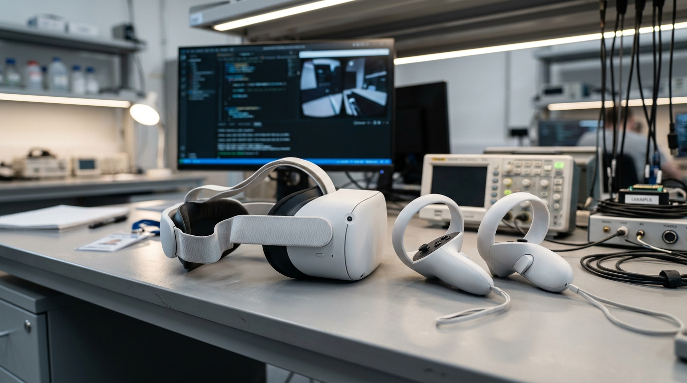

Justificación del Estudio
Por qué la realidad virtual inmersiva es el estándar definitivo para la formación contra incendios: análisis pedagógico, financiero, ecológico y operativo.
De acuerdo con el modelo de aprendizaje experiencial de David Kolb y la pirámide de retención del National Training Laboratories, los métodos pasivos (lectura de infografías y charlas magistrales) generan apenas entre un 10% y un 20% de retención a los 30 días.
En contraste, la práctica simulada ("learning by doing") en entornos inmersivos eleva la retención hasta un 75% - 85%, ya que el cerebro procesa la experiencia en VR como un recuerdo episódico vivencial vivido por el propio sujeto, afianzando la memoria motriz.
Una capacitación física estándar requiere adquirir o recargar decenas de cilindros de extintores (costo unitario de $25 a $40 USD por alumno), además del traslado a patios de maniobras y contratación de bomberos supervisores.
Con Fire Extinguisher Simulator VR, la inversión en visores Meta Quest 2 se amortiza en las primeras dos cohortes estudiantiles. Una vez desplegado, el costo marginal por alumno adicional es $0 USD, permitiendo repeticiones ilimitadas.
Los extintores tradicionales descargan polvo químico seco (fosfato monoamónico) que acidifica los suelos y contamina el drenaje pluvial, además de emitir gases presurizantes y humo denso en los simulacros con fuego vivo.
El simulador opera bajo una filosofía de cero huella de carbono: no produce residuos particulados, no consume agua potable ni genera emisiones tóxicas al medio ambiente universitario.
El entrenamiento con fuego vivo conlleva riesgos de quemaduras térmicas por ráfagas repentinas de viento, inhalación de humo con partículas asfixiantes o proyecciones de esquirlas por presurización indebida.
La realidad virtual erradica el 100% de la siniestralidad durante el aprendizaje, democratizando el adiestramiento para personas con asma, discapacidades motoras moderadas o miedo patológico al fuego.

Viabilidad TecnológicaDemocratización del Hardware: Meta Quest 2
La adopción de visores autónomos con procesador Snapdragon XR2 y cámaras integradas de rastreo inside-out permite eliminar las costosas estaciones de trabajo con cables y sensores externos. Cualquier aula convencional o biblioteca puede transformarse en un campo de entrenamiento contra incendios en cuestión de segundos.